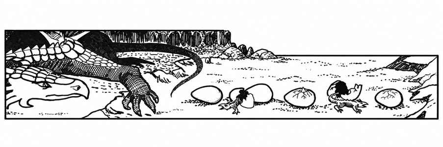
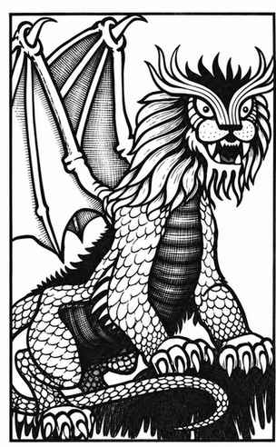

龙狮兽 · Dragonne

 |
|
龙狮兽是黄铜龙与巨狮的奇异混种，极其罕见，通常独居。它以巨爪与利齿战斗，但最可怕的武器是骇人的咆哮。怪物周围 12 寸内的生物必须通过对抗麻痹的豁免检定，否则会因恐惧而虚弱；3 寸内的生物还会耳聋。咆哮造成的两种效果均持续 2–12 个近战轮。因恐惧虚弱者的力量减半；耳聋者听不见任何声音，并因失去方向感而使攻击骰承受 −1 惩罚。
龙狮兽可用小翅膀短距离飞行，每次持续 1–3 回合。它们会说黄铜龙与斯芬克斯的语言。